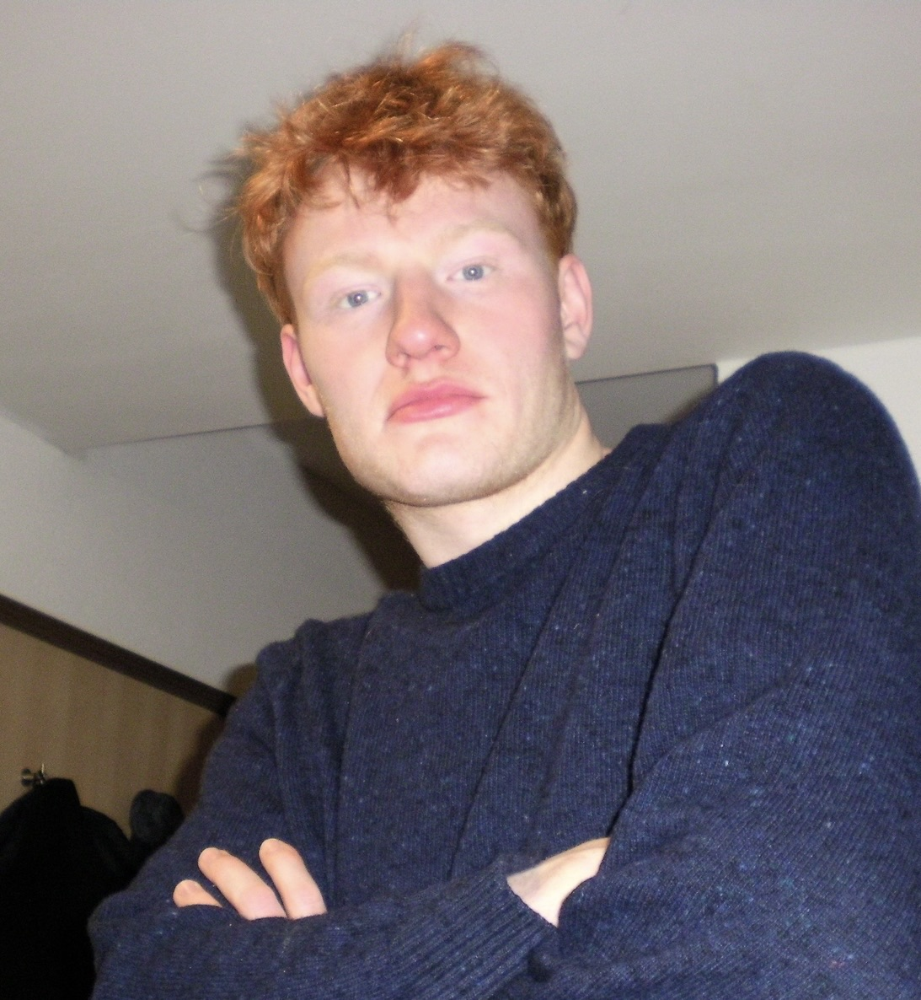

Computer science student with a broad curiosity and a focus on machine learning.

I'm a B.Sc. Computer Science student at the Technical University of Munich. My interests sit broadly across computer science — SLAM, applied AI, general machine learning, data science, efficient algorithms — with machine learning as the area I keep coming back to. Until January 2026 I worked as a research assistant at Fraunhofer IAO on AR/VR and applied AI; most of my own projects grow out of wanting to understand a new idea well enough to build it from scratch.
A structured thinker, in practice.
I work best where unfamiliar problems meet concrete systems. My curiosity is broad across computer science — SLAM and 3D perception, applied AI, general machine learning, data science, and the craft of efficient algorithms. Machine learning is the area I return to most often, usually by building something from scratch to understand how it actually works.
I care about clarity — in code, in writing, in the shape of a solution. When I hit a new domain I look for the underlying structure first, then connect it to what I already know. Outside work I'm a sports generalist: tennis, skiing, field hockey, and the triathlon disciplines.
Selected work. Four systems, built end-to-end.
Neural Network
↗A neural network built from scratch in Python with NumPy — forward propagation, backpropagation, activations, loss functions, optimisation, and training logic all implemented manually. The goal was to understand how a network actually works, not just to use one, and to have a transparent platform for experimenting with architectures on my own terms. The codebase trains on MNIST-style data with a small visualisation server for watching training progress, and includes both a standard model and a more experimental dynamic-network direction.
Helios
↗A Python-based SLAM system for real-time processing of high-frequency sensor streams, producing navigable 3D environments and supporting autonomous movement. I designed and built both the hardware platform and the software stack — sensor sync, mapping, pose estimation, and the navigation layer on top.
Sisyphus
↗A Python-based autonomous agent with LLM-driven decision-making, a custom MCP tool layer, and continuous goal-oriented execution. The project started from a question — what happens when you hand an LLM an unrestricted terminal and let it keep running? The answer turned into a framework.
Text to Motion
↗A 3D motion generation pipeline that composes two models — T2M and TEACH — to turn a textual description into a corresponding 3D human motion, delivered as a downloadable archive. Built as my Bachelor's practical course and accompanied by a scientific report.
Work. Research-side and operational.
Scientific & technical
Hospitality
Education. TUM, two campuses.
EQF level 6
Grade 1.7
Toolbox. Technical and otherwise.
Programming & platforms
Python · Java · C / C++ · Git, source control · Unix and Linux
Domains
Algorithms · Machine learning · Data science · SLAM & 3D perception · LLM agents · AR / VR
Ways of working
Analytical thinking · Structured problem-solving · Adapts to change · Independent research
Languages
Awards. Two scholarships.
Studienstiftung des deutschen Volkes < 0.4% of students
Scholarship holder of the German Academic Scholarship Foundation — Germany's largest and most selective merit scholarship, awarded to fewer than 0.4% of the student population.
e-fellows.net top 10% cohort
Online scholarship awarded to the top 10% of the cohort, granting access to a long-term professional network and partner programs.
Outside the lab. A sport generalist.
Endurance
Running, cycling, swimming. Currently building up toward a triathlon — a project in its own right.
Racket & team
Tennis and field hockey, played regularly. The parts of sport that need timing, angle, and quick reads.
Snow
Skiing in winter. Enjoying the complete silence on a snowy day while going down the slopes.